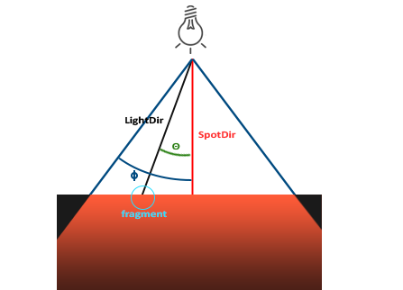

Lighting：讓平面的東西「立體」起來
- 知道光照 = 在 Fragment Shader 裡逐片段算亮度
- 會算 Diffuse 的 N·L（Lambert）：表面朝向對上光方向的點積，並知道 N、L 要先 normalize
- 記得 Phong = Ambient + Diffuse + Specular，並懂 Shininess 控制高光大小
- 認得三種光源：Directional / Point / Spot
先看：光拆成三塊相加

Lighting（光照）就是在 Fragment Shader 裡，替每個片段算一個亮度/顏色，模擬光打在表面的效果。 最經典的 Phong 模型把它拆成三塊、各自算完相加：
I = Ambient + Diffuse + Specular① Ambient：基礎亮度
最簡單的一塊：一個不管方向、均勻打在所有表面的底光，避免背光處全黑到看不見。
I_ambient = ka × Ia // ka 材質係數、Ia 環境光顏色② Diffuse：正對光越亮（Lambert）

塑造立體感的主力。它要兩個單位向量（長度 1、只代表方向）：
- N — 表面法線（第 2 課的 Normal），表面朝哪。
- L — 從表面指向光源的方向。
兩個向量「有多同方向」，用點積（dot product）量：
(a,b,c)·(x,y,z) = ax + by + cz。
單位向量點積的結果剛好是：同方向 = 1、垂直 = 0、反方向 = −1——正好就是「有多正對光」的分數。
I_diffuse = kd × Il × max(N·L, 0)那個 max(…, 0) 就是第 6 課的 clamp：背對光的地方 N·L 是負的，夾成 0——不會有負的亮度。帶數字看：
N = (0,1,0) 朝上 L = (0,1,0) 光從正上方
N·L = 0·0 + 1·1 + 0·0 = 1 → 最亮
N = (1,0,0) 朝右 L = (0,1,0) 光從上
N·L = 1·0 + 0·1 + 0·0 = 0 → 沒有 diffuse（只剩 ambient）
前提：N·L 要準，N、L 都得先 normalize（正規化成長度 1）再做點積——
算光照前固定先來這一手：
vec3 N = normalize(vNormal);
vec3 L = normalize(lightDir);
float diff = max(dot(N, L), 0.0);③ Specular：光滑表面的高光

只在特定視角看得到的亮點，讓表面有光澤。它多用一個向量 V（表面指向視點）：
I_specular = ks × Il × max(R·V, 0)ⁿ // R = 光的反射方向、n = Shininess跟 Diffuse 同一條規矩：R、V 一樣要先 normalize——所有進點積的方向向量都得是單位向量。
n（Shininess，光澤度）是「亮點多集中」的旋鈕：
n 小 → 一大片朦朧亮區（霧面）；n 大 → 一個小而銳利的亮點（金屬、塑膠）。
光源類型

Point：距離衰減（Attenuation）
點光源離越遠越暗，把算出的亮度乘上一個隨距離掉的衰減因子：
attenuation = 1 / (kc + kl·d + kq·d²) // d = 片段到光源的距離d 越大、分母越大 → 越暗。二次項 kq·d² 主導遠處的快速變暗（接近真實光的平方反比）。
Spot：切光角（Cutoff Angle）
聚光燈是一個錐形，用兩個角度界定邊緣：
- Inner cutoff（內圈角）以內 → 全亮。
- Outer cutoff（外圈角）以外 → 全暗。
- 兩圈之間用角度平滑漸暗，避免邊緣一刀切的硬邊。
intensity = (cos θ − cos outer) / (cos inner − cos outer)
// θ = 片段方向與聚光中心方向的夾角，結果夾在 [0,1]三者差在「光從哪來、怎麼衰減」——但每個片段的核心算法一樣：湊出 N、L、V，套前面那三塊公式。
快速確認
Q1 表面法線 N = (0.6, 0.8, 0)，指向光源 L = (0, 1, 0)。
Diffuse 的 N·L = ?
Q2 把 Specular 的 Shininess n 調大，高光會怎麼變？
Q3 某表面背對光源，算出 N·L = −1。
Diffuse 公式是 kd × Il × max(N·L, 0)。這面的 Diffuse 分量是多少？
原始資料 / 延伸閱讀
- 本課改寫自 遊戲繪圖_06_Lighting.md（含 N·L、R·V、Blinn-Phong 完整公式）
- 推薦閱讀：LearnOpenGL — Basic Lighting
想調光照參數看效果、或看 Blinn-Phong 半程向量怎麼算？問你的教學 agent（/teach）。